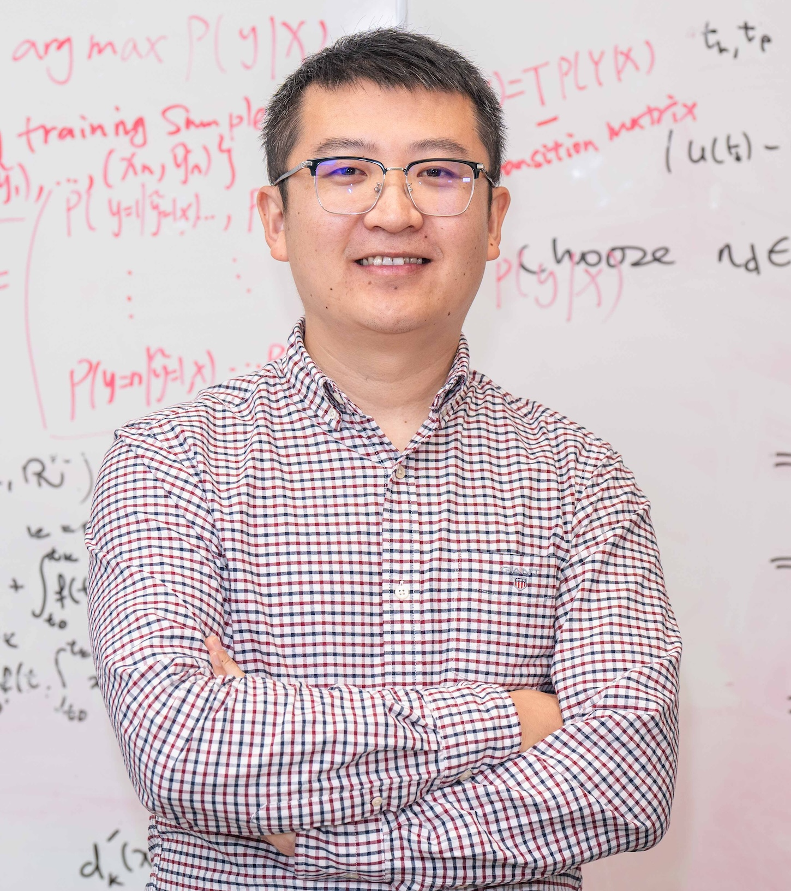
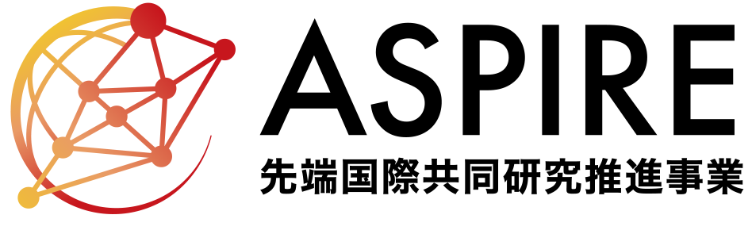
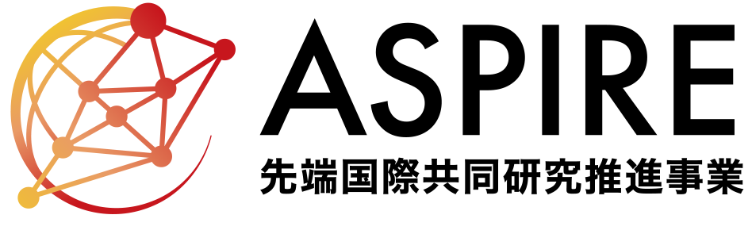

Tongliang Liu
Home
|  |
Tongliang Liu
Director of Sydney AI Centre
Address: Room 315/J12 1 Cleveland St, Darlington, NSW 2008, Australia |
Research Interests
Tongliang Liu's research interests lie in providing mathematical and theoretical foundations to justify and understand machine learning models and designing machine learning algorithms for problems in the field of
trustworthy machine learning (robustness, causality, efficiency),
multi-modality learning (generative models, 3D computer vision),
AI for science (electrochemistry),
quantum machine learning.
Short Bio
Tongliang Liu is the Director of Sydney AI Centre (which has 11 academic staff and 100+ PhD students) and an Associate Professor in machine learning at The University of Sydney, Australia; a Visiting Scientist of RIKEN AIP, Tokyo, Japan; an Affiliated Professor with Mohamed bin Zayed University of Artificial Intelligence, United Arab Emirates; a Visiting Professor with University of Science and Technology of China, Hefei, China. He is also leading the Trustworthy Machine Learning Lab (TML Lab) at The University of Sydney, which hosts, attracts, and connects the best global talents to develop trustworthy machine learning techniques and tools, which are explainable, robust, fair, causally responsible, and privacy-preserving. Our mission is to make machines trustworthy, which is a foundation for our society to develop and deploy artificial intelligence to improve our lives.
He was born in Yili, Xinjiang, China. He received his BEng degree from University of Science and Technology of China and PhD degree from University of Technology Sydney (UTS). Upon graduation, he got a Lecturer position at UTS. He then joined The University of Sydney in 2017 as a Lecturer. He has published more than 200 papers at leading ML/AI conferences and journals. According to CS Rankings, he has been ranked as the first in machine learning in Australasia.
He received the Young Distinguished Scientist Award from the International Association of Engineers (IAENG) in 2025; the Outstanding Research Contribution Award from the Computing Research and Education Association of Australasia, CORE Inc., in 2024, Eureka Prize shortlist for Emerging Leader in Science from Australian Museum in 2023, IEEE AI's 10 to Watch Award from the IEEE Computer Society in 2022, Future Fellowship Award from Australian Research Council (ARC) in 2022, Faculty Early Career Research Excellence Award at The University of Sydney in 2021, the Top-40 Early Achievers by The Australian in 2020, and the Discovery Early Career Researcher Award (DECRA) from ARC in 2018. He also received multiple faculty awards, e.g., from OPPO and Meituan. Tongliang is also very proud of his talented students, who have made/are making/will make significant contributions to advancing science. They have also been recognised by many awards, e.g., Google PhD Fellowship Awards.
He is a Co-Editor-in-Chief of Neural Networks. He is a Senior Area Chair of NeurIPS and ICLR. He is regularly the meta-reviewer of ICML, NeurIPS, ICLR, UAI, IJCAI, and AAAI. He is an Associate Editor of IEEE TPAMI, TMLR, MLJ, JAIR, TIP, and ACM Computing Surveys, and on the Editorial Board of Journal of Machine Learning Research.
Top News
We are looking for visiting scholars for Asian Trustworthy Machine Learning (ATML) Fellowships. See more details here. [Fellows in 2023] [Fellows in 2024] [Fellows in 2025]
01/2026, we are organising the 40th Annual AAAI Conference on Artificial Intelligence (AAAI) on 20-27 January, Singapore. Welcome to join us.
12/2025, we are organising the 17th Asian Conference on Machine Learning (ACML) on 09-12 December, Taipei. Welcome to join us.
04/2025, we are organising the ACM Web Conference (WWW) on 28 April - 2 May in Sydney, Australia. Welcome to join us.
04/2025, Our monograph-type article "Trustworthy Machine Learning: From Data to Models" (ISBN: 978-1-63828-548-9) has been published by Foundations and Trends® in Privacy and Security. [Non-commercial PDF]
04/2025, I am honoured to receive the Young Distinguished Scientist Award (Machine Learning and Neural Network) by the International Association of Engineers.
02/2025, I accepted the invitation to serve as a Senior Area Chair for NeurIPS 2025.
11/2024, Our proposal Mental Well-being Intelligence has been funded by the Japan Science and Technology Agency.
11/2024, my student Muyang Li got the Royal Society of New South Wales Bicentennial Postgraduate Scholarship! Congrats Muyang!
07/2024, I accepted the invitation to serve as a Senior Area Chair for ICLR 2025.
06/2024, I accepted the invitation to serve as an Associate Editor for IEEE TPAMI.
03/2024, I accepted the invitation to serve as a Senior Area Chair for NeurIPS 2024.
02/2024, I am honoured to be named an AI Future Leader by AI Magazine: "Top 10: Future AI Leaders".
12/2023, I am honoured to receive the CORE Award for Outstanding Research Contribution.
07/2023, I am honoured to be shortlist for the Eureka Prize for Emerging Leader in Science.
05/2023, I am honoured to receive the IEEE AI's 10 to Watch Award by the IEEE Computer Society. [PDF]
04/2023, We have organised the MBZUAI-RIKEN AIP joint workshop on intelligent systems.
09/2022, I was selected as an Australian Research Council Future Fellow
(only three researchers across Australia was awarded in the field of Information and Computing Sciences in 2022).08/2022, Two of my PhD students have got Google PhD Fellowship Awards. Congrats Xiaobo and Shuo!
03/2022, I will co-organize IJCAI 2022 Challenge on Learning with Noisy Labels.
02/2022, my monograph on learning with noisy labels has been accepted by MIT Press.
12/2021, I received the Faculty Early Career Research Excellence Award, University of Sydney.
02/2021, we are organising the first Australia-Japan Workshop on Machine Learning.
9/2020, I was named in the Early Achievers Leaderboard by The Australian.


 
